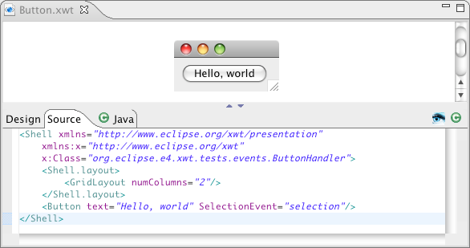
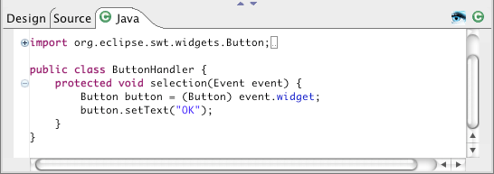
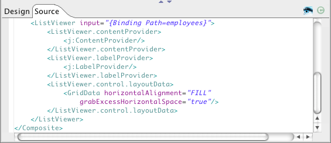
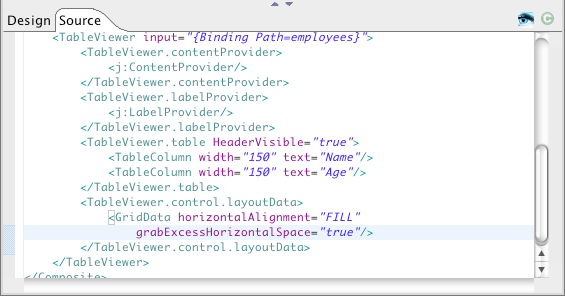
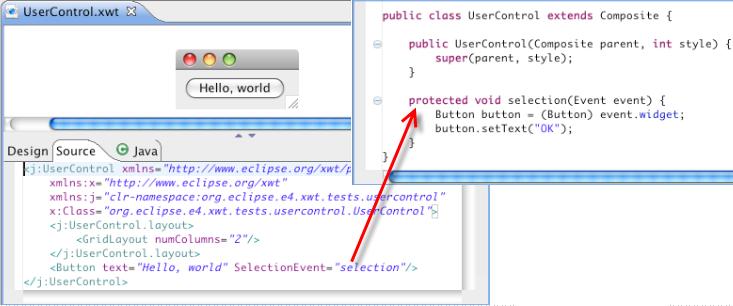
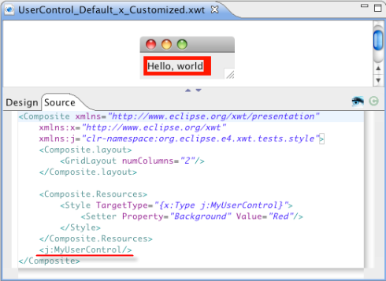
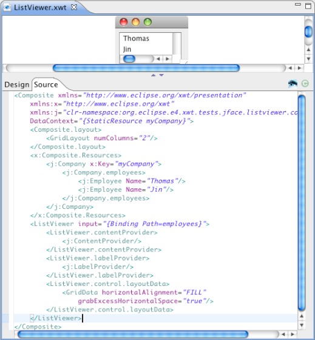
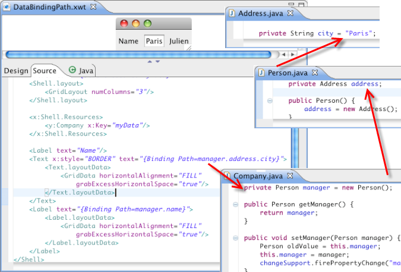
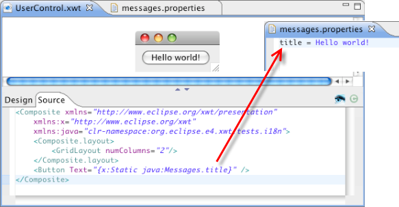

Support of all SWT widgets
The XWT supports all standard layouts such as FillLayout, FormLayout, GridLayout, RowLayout, StackLayout.
It also handles all SWT events and two additional events "Initialized" and "loaded". "Initialized" is the event occurs when the UI is initialized and "Loaded" is the event occurs when the window or page is load.
Dynamic event handling
The association between the UI View and class control is setup during UI loading without any registration beforehand.
In the following example, the event "SelectionEvent" is handled by the method "selection" of ButtonHandler.

Here is the class implements the event handler.

When click the button, the content be changed to "OK".

Support of JFaces viewers
It supports JFace ListViewer and TableViewer. The following Viewer binds to a Company object. The data can be stored in an Array or in a collection.
This is ListViewer.

Below is a TableViewer example with the definition of two table columns.

Easy support of custom widgets
Capable integrate directly user-defined Widget in Java into XWT.
The customized UI "UserControl" contains a Button with a selection event.

Now integrate the above example into a new XWT component directly. See the screenshot below.

Here is the result.
Style
All the controls in XWT has an additional property "style", which can select a style object where you can define a common appearance such as fonts, colors and images.
In the following example, we defined the background of Label with red color.

It is possible to define a style for a specific type. It is applied to all UI elements of this type under the UI tree structure.
MyUserControl component is a Label with text "Hello, world". We embed it into MyUserControl_default_x_Customized component with a style. The result likes below.

It supports data binding that based on JFace. See the example below. It binds to a Company object.

In XWT, each node in the UI tree structure has a data context. If a node has not a data context specification, it inherits the data context of his parent. The data binding expression in a property relies on the data context of Node.
The presentation of data through references can be expressed in path expression.
The following example will show the city of the manager of a company, which is the data context of Window. The path is specified as "manager.address.city".

Data Binding requires always a consistent configuration between data model, binding expression and UI structure. In a real application, it becomes quickly complex and the trouble shooting can be a headache work without a specific tool. This option displays UI element tree structure with the associated data context and its resolution with data binding expression. It can identify and indicate quickly the location and nature of errors.
Take the example above, add an event button. Run the project.

Click the button. The log is displayed in the Console.

"Command" support for MenuItem and Button
A command is an action associated to an event selection. It is defined on Button and MenuItem, for example the action "Open", "Close" to Open or close a window. Unlike event, all commands must be declared beforehand to the framework:
XWT.registerCommand("<command's name>", aCommand)
Reusable UI Component
Reusable UI Component is a UI component that can be used directly without modification and adaptation.
Key binding
The Key Binding specifies keyboard shortcuts for an action. In XWT, it corresponds to the accelerator property of SWT.
i18n
XWT supports i18n of the simple case in current release.
See the example below, the content of the button is specified by the "title" value of messages.properties file.

Styling
XWT implements a custom styling mechanims. A style can be applied in several levels:
- Application
- Resource View
- UI Element
The integration with e4 CSS is already provided as one of standard styling solutions.